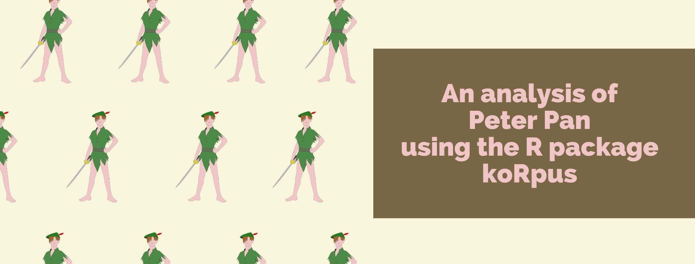
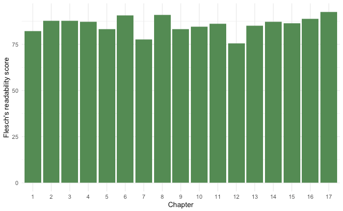

If you are into language research, you probably use R to analyze your data 📊. One of the good things about R is that you can install packages to extend R’s basic functions. In this blog post, I’d like to introduce you to a very useful package for language research: koRpus.
Despite its name, the R package koRpus was designed to work with individual texts, and not with a collection of texts (I know, this is confusing!). koRpus mostly provides you with automatized formulae to calculate readability and lexical diversity. For this post, I’ll be using Peter Pan’s famous fairy tale to illustrate some of the things you can do with this package.
The first thing you’ll need to do is to install and load the package, of course! 🤓 In addition to loading the koRpus package, you’ll also need to install and load a language model. Because the text I chose is in English, I loaded the English model (Note: I also loaded tidyverse, as it’s useful for the analysis too).
library(koRpus)
library(koRpus.lang.en)
library(tidyverse)
The second step is also pretty obvious: We need texts to analyze! In my case, I downloaded the Peter Pan fairy tale from Project Gutenberg as several plain txt files (one per chapter). You should move your text(s) to the folder where your R project is located 📂.
In order to run koRpus's formulae, you first need to split your text into tokens (aka. tokenization). Here, you can install and use TreeTagger or you can use the tokenize function from the koRpus package itself. The use of TreeTagger is recommended, as its results are more precise. However, because here I’m showing you how to use the koRpus package, I used tokenize() instead 👇.
tokenized_chapter1 = koRpus::tokenize(
"PeterPan_Chapter1.txt",
lang = "en",
doc_id = "Chapter 1"
)
As explained before, since koRpus was designed to work with a single text, you would have to repeat this process for as many texts as you have.
Once your text is tokenized, you can use the describe() function to get some information about your text, such as number of tokens, sentences, and so on. This is an optional step but it’s something you might be interested in, depending on what you are researching.
describe(tokenized_chapter1)
Readability measures how easy it is to read a text. As you can imagine, several formulae have been proposed to calculate readability, as it’s a quite complex construct. Luckily, koRpus provides several of these formulae to choose from. You can find a comprehensive list here.
In my case, I used the Flesch formula, which is one of the most common ones. However, this formula requires the text to be split into syllables. But don’t worry, koRpus has a function to do just that! The function is called hyphen() and you just need to pass the tokenized text as its argument.
hyph_chapter1 = hyphen(tokenized_chapter1)
After this is done, you can apply the readability formula 👇:
flesch_chapter1 = flesch(tokenized_chapter1, hyphen = hyph_chapter1)
Once again, you would have to repeat this process for as many texts as you have. For the Peter Pan fairy tale, I calculated the Flesch scores for all 17 chapters. You can also plot the results afterwards to see how readability changes throughout chapters (this is where tidyverse comes in handy!).

It seems that the readability scores are pretty consistent throughout, which is a good sign!
Just like for readability, koRpus has several formulae to calculate lexical diversity. Lexical diversity measures how many different lexical words there are in a text. Here, you can either use a specific function for the formula you want to use (these are called “wrapper functions”), or you can use a general function where you specify the exact formula you’re interested in.
I decided to calculate the type-token ratio (TTR) in the Peter Pan fairy tale. In the example below, you can see how I used the general formula to specify that ‘type-token ratio’ (TTR) should be used.
lex_div_chapter1 = lex.div(
tokenized_chapter1,
measure = ("TTR"),
char = ("TTR")
)
show(lex_div_chapter1) # use this to print the results!
In this formula, we first have to provide the name of the formula (“TTR”) and then, we specify whether we want to output the characteristics of the measure in question. This latter is optional and can be omitted by writing char = NULL instead.
After using the show() function, we would get something like this:
Total number of tokens: 3083
Total number of types: 875
Type-Token Ratio
TTR: 0.28
TTR characteristics:
Min. 1st Qu. Median Mean 3rd Qu. Max.
0.2833 0.3209 0.3531 0.3871 0.3978 1.0000
SD
0.1117
That would give us the TTR for chapter 1 only (TTR: 0.28), so remember to repeat this process for all your texts.
Up to here, I have shown you some of the main things you can do with koRpus, but you can always read the official documentation to learn more about the package and what it offers 📄.